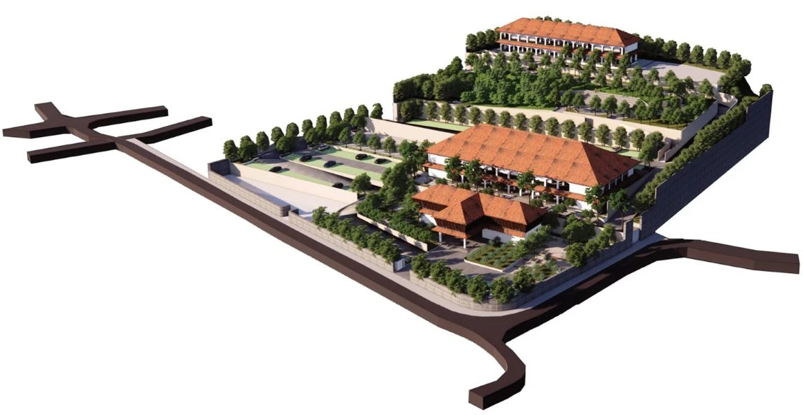

Climate and culture shape the form, like users shape a product.
Architecture · Kerala
Kottayam.
Where I began five years of architecture school: tiled roofs, courtyards and the Kerala climate.
- Place
- Kottayam, Kerala
- Stage
- Studio year?
- Year
- Year
- Drawn
- Site model, aerial view

01 · The project
Roofs that shape the place.
Add two lines on the brief and your idea.

What it taught me
Space, then screens.
I trained as an architect. This is where my product thinking started.
Learning how parts hold together.
Patience with detail I still use in Figma.